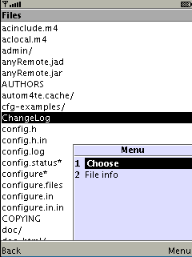
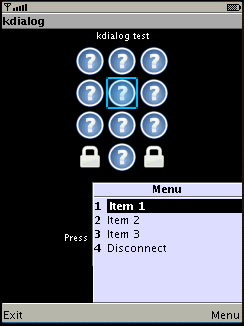
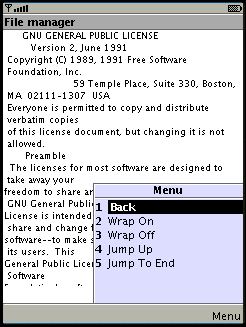
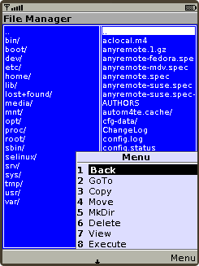

Set(menu ... ) command
 This command used to manage a menu associated with the screen of the client.
Format
Set(menu,add|replace,_list_of_items_) or
Set(menu,clear)
Usage
Set(menu,add ...)
Command Set(menu,add ...) used to add items to the menu.
1=Set(menu,add,Item1,Item2,Item3) 2=ExecAndSet(menu,add,cat some_file.txt)
Set(menu,replace ...)
Command Set(menu,replace ...) used to replace items in the menu.
1=Set(menu,replace,Item1,Item2,Item3) 2=ExecAndSet(menu,add,cat some_file.txt)
There is a set of predefined menu items are associated with each screen of the client. These set of items will be added automatically during execution of Set(menu,replace ...) command.
Here is the sets of predefined items:
| Controls (main) screen: | List view screen: | Text view screen: | File manager screen (J2ME client only): | Editfield screen: |
Exit Disconnect |
Back |
Back Wrap On (J2ME client only) Wrap Off (J2ME client only) Jump Up (J2ME client only) Jump To End (J2ME client only) |
Back GoTo Copy Move MkDir Delete View Execute File info |
OK Back |
Set(menu,replace ...) command is not a superposition of Set(menu,clear) and Set(menu,add ...) commands because predefined menu items will be added only during Set(menu,replace ...). As a results, it is possible to omit predefined menu items by executing Set(menu,clear) and Set(menu,add ...) commands.
Set(menu,clear)
Command Set(menu,clear) used to remove all items from menu.
7=Set(menu,clear)
To avoid possible mess with menu, all menu items will be deleted each time client screen changed from one type to another (i.e. from Control (main) view to Text view). So, it is not necessary to issue Set(menu,clear) when client screen changed from one type to another. On another side it means what Set(menu ...) command should be executed after others Set(...) commands.
Format of replies
If user chooses menu item MenuItem, some command will be sent to the server. The exact syntax of command depends on the screen of the client from which it is issued (where I is index of selected item in list and ValueI is a value of selected item in list):
Control (main) screen Text of choosen menu item will be sent as a reply for custom menu items. Predefined menu item Exit managed internally. According to the picture Item 1 will be sent as a replay. |
List view screenIn this case replies will have the following format _menu_item_text_(_index_of_selected_list_item_, _text_of_selected_list_item_). According to the picture Choose(9,ChangeLog) will be sent as a replay. |
Text view screen Text of choosen menu item will be sent as a reply for custom menu items. Predefined menu items except Back managed internally. According to the picture Back will be sent as a replay. |
File manager screen In case of single selection replies will have the following format: _menu_item_text_L( _index_of_selected_list_item_, _text_of_selected_list_item_) in left panel and _menu_item_text_R( _index_of_selected_list_item_, _text_of_selected_list_item_) in right panel. In case of multiple selection replies will have the following format: M__menu_item_text_L( _index_of_selected_list_item_, _text_of_selected_list_item_) in left panel and M__menu_item_text_R( _index_of_selected_list_item_, _text_of_selected_list_item_) in right panel. Such reply will be sent for each seleted file, but the last. For the last selected file command with single-selection syntax will be issued. According to the picture BackR(1,..) will be sent as a replay. |
Editfield screen
In this case replies will have the following format _menu_item_text_(0, _editfield_value_)
Search screen
No command will be issued. All menu items managed internally.
Additional
It is not recommended to create menu items with labels OK and ERROR since command which will be sent for such menu items will be parsed incorrectly by the server.